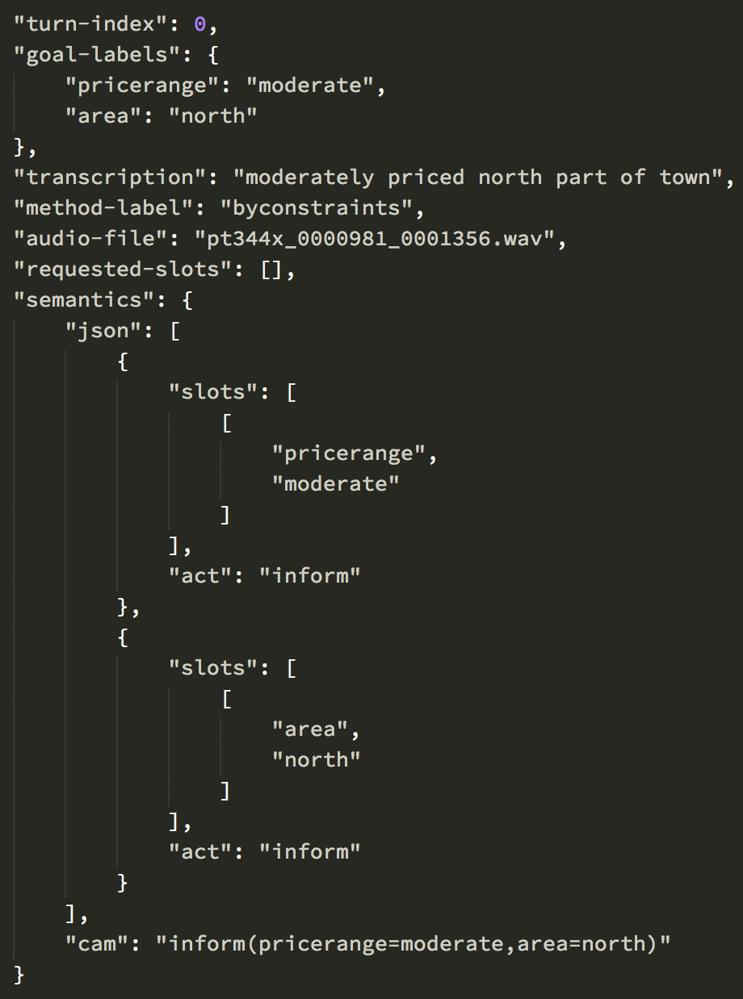

Weekly Report VIII
林義聖、陳力宇
April 11, 2017
Natural Language Understanding
- Slot Filling -
Slot Filling
- Data Pre-processing
- Intent Prediction
- Slot Detection
Data Pre-processing
Dataset
- DSTC 2 - Dialog State Tracking Challenge 2
- A large number of training dialogs related to restaurant search
- Website: http://camdial.org/~mh521/dstc/
Dataset
Pre-processing

Pre-processing
im looking for a cheap restaurant with spanish food
⇩
inform(pricerange=cheap,food=spanish)
Pre-processing: Intent
im looking for a cheap restaurant with spanish food
⇩
inform(pricerange=cheap,food=spanish)
⇩
inform
Pre-processing: Intent
im looking for a cheap restaurant with spanish food
⇩
inform(pricerange=cheap,food=spanish)
Pre-processing
| Position | 1 | 2 | 3 | 4 | 5 | 6 | 7 | 8 | 9 |
| Sentence | im | looking | for | a | cheap | restaurant | with | spanish | food |
| Slots | _ | _ | _ | _ | PRICERANGE | _ | _ | FOOD | _ |